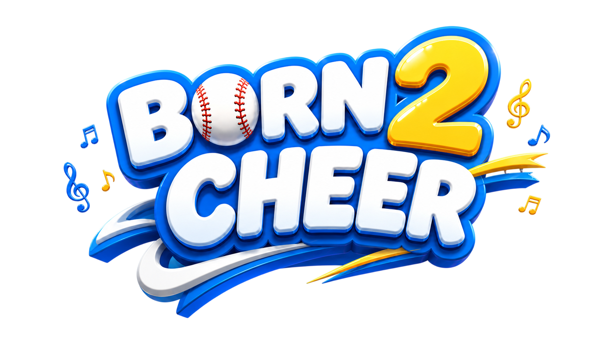
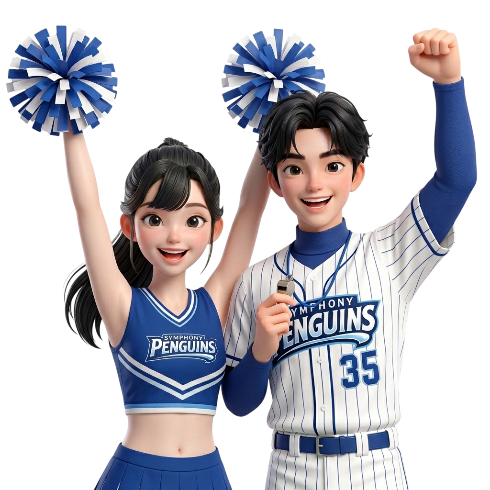

카메라 앞에 서기
플레이 영역 안에서 준비 자세를 잡고 화면 안내를 확인합니다.


How To Play
플레이 영역 안에서 준비 자세를 잡고 화면 안내를 확인합니다.
화면 속 안무와 음악을 따라 움직이며 응원 동작을 완성합니다.
동작 타이밍과 싱크로율에 따라 점수가 실시간으로 올라갑니다.
플레이가 끝나면 나만의 응원 영상을 확인하고 다운로드합니다.
Features
몸을 움직이는 즉시 플레이가 됩니다. 별도 장비 없이 화면 앞에서 바로 응원 동작을 시작할 수 있습니다.
친구와 함께 더 높은 싱크로율에 도전합니다.
펭귄즈, 울브즈, 비즈 중 원하는 팀을 고릅니다.
움직임이 바로 점수와 랭킹으로 이어집니다.
개인과 팀 모두 순위를 겨룰 수 있습니다.
응원하는 순간을 영상으로 남겨 다시 볼 수 있습니다.